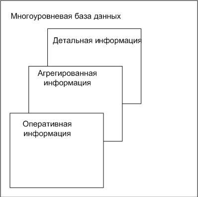
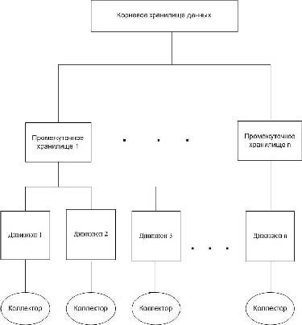
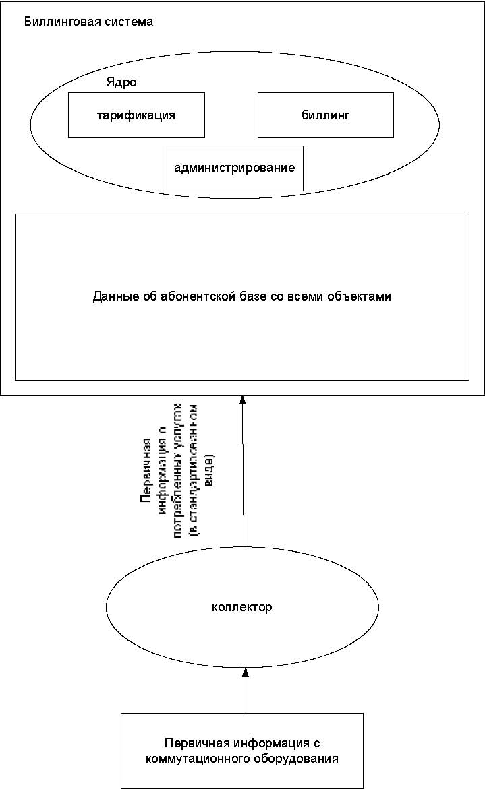

Краткий обзор архитектур современных биллинговых систем и перспективы их развития

В статье проведен обзор основных архитектур
биллинговых систем, применяемых в настоящее
время. Дано описание общей структуры
биллинговой системы для автоматизации расчетов
сотовых операторов и перспективы их развития.
Изложена идея кэширования биллинговых данных
в оперативной памяти отдельного сервера с целью
увеличения скорости обработки данных и
уменьшения нагрузки на СУБД ...
Автор : Дерикьянц Павел Павлович
аспирант .
Кубанский государственный аграрный университет, Краснодар, Россия.
При нынешнем развитии телекоммуникаций такое же высокое развитие получили и системы, которые призваны проводить расчет услуг потребленных пользователями, предоставленных на основе того или иного телекоммуникационного оборудования. Такие системы принято называть биллинговыми. Их основная цель отражение количества услуг, потребленных абонентом и списывание средств согласно стоимости за единицу измерения услуги. Исходя из этого, можно дать определение: биллинговая система (БС)-программный комплекс, осуществляющий учет объема потребляемых абонентами услуг, расчет и списание денежных средств, в соответствии с тарифами.
Так же необходимо дать определение понятию абонент. Абонент – физическое или юридическое лицо, с которым заключен договор на предоставление услуг связи и которому присвоен телефонный или какой-либо другой идентификационный номер сети.
Области применения и виды БС могут быть, довольно, различные. Например, БС могут применяться для обслуживания городской телефонной сети, учета интернет трафика на серверах интернет-провайдеров. В данной статье будут рассмотрены возможные схемы реализации биллинговых систем для учета услуг сотовых операторов. Этот вид БС выбран не случайно, так как именно сотовые операторы предоставляют наиболее широкий перечень услуг (голосовые вызовы, переадресация, роуминг, SMS-сообщения, мобильный интернет и т.п.). Причем все эти услуги предоставляются по разным ценам, в зависимости от того, в состав какого тарифного плана они входят, а с недавнего времени часть из них может предоставляться в режиме реального времени. Этот режим предполагает схему предоставления услуг на основе выделения квот, исходя из имеющихся на лицевом счету средств. Это позволяет предоставлять абонентам услуг на сумму, не большую чем есть у него на счете. И, конечно, объемы абонентских баз этих операторов в настоящее время составляют несколько миллионов. Как следствие всего этого, к БС для сотовых сетей предъявляются очень жесткие требования, как в плане производительности и надежности, так и в гибкости настройки.
Далее будут рассмотрены различные схемы и архитектуры построения БС и описаны достоинства и недостатки каждой из них.
Для построения эффективной БС необходимо выделить основные задачи, которые она должна решать и возможности, которые должна предоставлять.
-сбор информации о потребляемых услугах (аккаунтинг)
-аутентификация и авторизация абонентов
-контроль денежных средств на счетах абонентов и списание средств в соответствии c действующей тарифной сеткой
-пополнение счетов абонентов
-внесение изменений в тарифы
-предоставление статистики по операциям (клиентская и операторская части)
Однако в свете развития технологий и сфер применения можно выделить еще несколько задач:
- -
- поддержка Web и WAP интерфейсов, позволяющих абоненту самому получать информацию и управлять своими услугами;
- -
- поддержка GPRS; -обеспечение работы с дилерской сетью оператора связи - поддержка продаж подключений через дилеров;
- -
- поддержка функций автоинформирования клиентов о состоянии их балансов и о предстоящем отключении услуг;
-максимальная "персонификация" отношений оператора связи и его клиента; А также алгоритмов обслуживания клиентов, группируемых оператором связи по произвольному признаку.
Хочется отметить, что данный список не является окончательным и с течением времени и постоянно растущими потребностями, в его состав входят все новые задачи.
В зависимости от требований бизнес процессов и решаемых задач схема системы может быть следующей:
-коллекторы информации о потребленных услугах
-система аутентификации абонентов
- -
- ядро (бизнес-логика)
- -
- база данных
- -
- модуль авторизации
- -
- модуль анализа и тарификации трафика
- -
- модуль разграничения доступа
- -
- модуль статистики
-административный интерфейс для ручного управления абонентами
-интерфейс управления счетами абонентов и тарифами для отдела продаж Коллекторы
Как правило, информацию о предоставленных услугах БС получает от коммутаторов и др. устройств, принимающих участие в данном процессе (например, оборудование фирмы Cisco). Однако, формат этих данных может меняться от версии к версии и зависит от производителя. Коллектор как раз и служит для приведения исходных данных к единообразному виду.
В большинстве своем такие коллекторы разрабатываются под конкретное оборудование, и не включает в себя сложной логики работы. Вся задача сводится к периодическому запуску программного модуля и обработкой входных данных, файлов с учетными записями (УЗ). Из таких файлов коллектор должен выбрать только ту информацию, которая необходима для биллинга. Это, как правило, записи содержащие информацию о звонках абонентов, посылке/приеме коротких сообщений, интернет трафике, включение и выключение дополнительных услуг. В случае сбоя он должен сделать соответствующую запись в журнальный файл или вывести в консоль предупреждение и поместить сбойный файл в отдельную директорию, дабы иметь возможность провести анализ ошибки. Как дополнительная функциональность коллектор может при запуске самостоятельно забирать с коммутирующего устройства файлы, подлежащие обработке. Данный модуль является ключевым, так как остановка его работы ведет к остановке тарификации и контроля над своевременным отключением услуг.
Cистема аутентификации абонентов
Для биллинговых систем применяемых в сфере предоставления мобильных услуг не является значимой, так как практически полностью ложится на коммутирующее оборудование.
Ядро (бизнес-логика)
Как правило, в ядро биллинговой системы входят модули:
-биллинга
-тарификации и анализа трафика (в ряде решений выносится из ядра и оформляется как отдельный сервер)
-администрирования
Основные требования к ядру – это его универсальность и масштабируемость. Интерфейс ядра должен быть разработан таким образом, чтобы его можно было использовать с различными коллекторами и обслуживающими программами (сервисами), которые используют ядро при решении своих конкретных задач. Оно должно иметь возможность работать с неограниченным числом тарифных планов, иметь гибкую тарификацию: различные правила округления, поминутная/посекундная тарификация, цена в зависимости от времени суток или дня недели, мультивалютность (курс USD может ежедневно устанавливаться автоматически по данным с указанного источника).
У биллингового модуля выделяется следующие функции:
-ведение лицевых счетов, биллинговых групп, абонентов и абонируемых услуг;
- -
- формирование начислений за разовые и периодические услуг;
- -
- формирование начислений за трафик;
-блокировку и разблокировку предоставления услуг по различным событиям;
-выставление биллинговых счетов;
-генерацию дополнительных документов;
-оповещение других подсистем о наступлении различных событий. Для модуля тарификации:
-возможность ведения разнообразных тарифных планов;
-гибкую настройку условий определения стоимости услуг, зависящих от произвольного числа параметров, включая счетчики. Для модуля администрирования:
-ведение списка пользователей системы;
-управление правами пользователей на подсистемы и функции.
-централизованное управление периодическими процессами, работающими в рамках системы. Использование СУБД ORACLE, позволяет практически полностью реализовать функции этого модуля ее штатными средствами. База данных Неотъемлемая часть любой информационной системы. От ее правильной организации во многом зависит производительность и надежность работы системы в целом.
Хорошо зарекомендовала себя многоуровневая база данных. Она нужна для того, чтобы не работать все время с массивами максимально детальной информации, т.к. это значительно может снизить быстродействие всей системы.
Как правило, выделяют 3 уровня:
1. максимально детализированная информация без какой-либо обработки
- классифицированная и первично агрегированная информация
- оперативная информация
База первого уровня может понадобиться для разрешения спорных моментов с клиентами. Важно сохранять ее в исходном виде, т.к. возможно будет необходимо постфактум произвести перерасчет выставленных к оплате счетов с учетом скорректированных тарифов. Минусом является значительный объем, требующийся для хранения всех этих данных. Однако, т.к. эта информация нужна не очень часто, ее более логично хранить в виде обычных файлов, а не в базе -это уменьшит нагрузку на сервер БД и является более компактным способом хранения.
База второго уровня компактнее, чем первая, поэтому ее можно хранить за более продолжительный период времени. Например, на данном уровне уже нет необходимости хранить всю информацию о звонках
абонента – достаточно иметь суммарные показатели звонков, допустим, за месяц: продолжительность, стоимость и т.д.
Оперативная информация -наиболее грубая по отношению к остальным двум базам, но зато операции с ней можно совершать очень быстро, что позволяет сократить время реакции системы, которое будет обсуждаться ниже. На основе этой базы осуществляется принятие решений о предоставлении или прекращении предоставления услуг конкретному клиенту.
Такую многоуровневую систему можно реализовать как в рамках одного сервера, так и на нескольких серверах, территориально удаленных друг от друга. Схематично ее можно изобразить так:

Рис. 1 Схема многоуровневой БД На данный момент существует два подхода к построению архитектуры биллинговых систем:
- Иерархическая
- Централизованная
Рассмотрим каждую из них подробнее.
Иерархическая модель.
Основной идеей данной архитектуры является разбиение абонентской базы на части (так называемые дивизионы) и последующей агрегацией данных на сервера более высокого уровня.
Такая архитектура позволяется использовать в качестве сервера базы данных не слишком мощный сервер. Что требует меньших капитальных затрат. Но в то же время повышает накладные расходы на обслуживание большого количества серверов. Кроме того, такая реализация крайне неудобна в эксплуатации и требует сложных алгоритмов биллинга и агрегации.
Достоинством данной архитектуры является возможность дробления абонентской базы на небольшие объемы (например, по территориальной принадлежности), что позволяет, при использовании СУБД ORACLE или PostgreSQL, реализовать практически все функции БС на таком языке как PL/SQL. Что существенно уменьшает затраты на разработку.
Схема может выглядеть вот так:

Рис. 2 Схема реализации иерархической БС.
уровней так же может меняться в зависимости от организационной / территориальной структуры. БД для каждого дивизиона является полнофункциональной биллинговой системой со всеми возможностями. То есть включает в себя ядро со всеми сопутствующими модулями.

Рис. 3 Схема реализации отдельного дивизиона БС.
На следующем уровне БС функционирует промежуточное хранилище данных. В нем, как правило, хранятся агрегированные данные одного или нескольких дивизионов. Это могут быть суммарные значения продолжительности и стоимости звонков по каждому абоненту и т.п.
Объемы данных на этом уровне уже намного меньше, чем в БД дивизионов и их можно хранить за более длительный период. Кроме того, на этих серверах нет постойной нагрузки связанной с обслуживанием абонентов и их можно использовать для проведения биллинговых циклов, генерации отчетов и проведения различных аналитических операций. В свою очередь, такие промежуточные хранилища могут сливаться в хранилища, более высокого уровня.
И, наконец, вся информация после обработки попадает в корневое хранилище. В нем содержится самая общая информация об абонентской базе.
Централизованная архитектура, наоборот, предъявляет высокие требования к серверу БД, но является простой в обслуживании, контроле версий ПО и практически не требует агрегации данных по абонентам. Однако существенным ее недостатком является практически полная неработоспособность при большой абонентской базе. Дело в том, что реализация функциональности на интерпретируемом языке PL/SQL не обладает таким быстродействием, как язык С++ и объемы операций ввода/вывода достигают таких размеров, что дисковые массивы не способны обеспечить нужное быстродействие. Кроме того для работы процедур биллинга на таких объемах потребует колоссальных объемов оперативной памяти. Данную проблему можно решить путем предварительного вычитывания всех необходимых данных из основной БД и дальнейшей обработки ее в ОЗУ на отдельном сервере. Такой подход называется кэширование данных и является довольно удобным, т.к. открывает широкие возможности для масштабирования системы и отдельных ее модулей. Подробнее данный вопрос будет рассмотрен далее.
Модуль авторизации
Авторизация, применительно к БС – процесс принятия решения о предоставлении или запрете доступа к той или иной услуге. Основными
критериями для такого решения является достаточность баланса и доступность запрашиваемой услуги. Однако, возможны случаи, когда абоненту был выделен определенный лимит на использование определенной услуги и при его исчерпании абоненту отказывается в доступе. Другими словами, задача модуля является прием запроса на правомерность доступа извне, проверку всех условий, влияющих на возможность предоставления услуги определенному абоненту и отправка ответа с принятым решением.
Модуль анализа и тарификации трафика
Может являться частью ядра БС, но в ряде случаев реализуется как самостоятельный модуль. Это дает возможность к более простой масштабируемости тарификации. Об основных требованиях к данному модулю уже было сказано выше.
Модуль разграничения доступа
Служит для организации разграничения доступа к информации, хранящейся в ИБС и операциям с ними, на основе различных атрибутов пользователя (вхождение пользователя в административную группу или принадлежность его к какому-либо филиалу).
Модуль статистики
Является сервисным и носит необязательный характер использования. Служит для сбора информации, которая в дальнейшем может использоваться для анализа производительности и составления служебных отчетов для внутреннего использования.
Административный интерфейс для ручного управления абонентами
Входит в состав так называемого back-офиса. Содержит в себе набор необходимых инструментов для просмотра и редактирования информации о клиенте, списка предоставляемых ему услуг, детализации вызовов и прочее.
Интерфейс управления счетами абонентов и тарифами для отдела
продаж
Входит в состав front-офиса. Содержит в себе набор инструментов, которые позволяют заносить в БС новых абонентов, выбирать для него тарифный план, подключать дополнительные услуги и принимать платежи.
Идея кэширования рано или поздно должна была появиться у разработчиков БС. Она назревала постепенно. С течением времени, когда объемы обрабатываемой информации многократно возросли и для поддержания необходимой производительности, приходилось либо наращивать количество дисковых массивов, чтобы увеличить скорость зачитывания данных с жестких дисков, объемы оперативной памяти и т.п., либо искать альтернативные пути, появилась идея использовать уже давно работающий механизм кэширования часто используемых данных, которые меняются достаточно редко. Суть скопирована из области разработки процессоров, но конечно в чистом виде применить ее для работы в АСР не получилось.
Схема организации реализована следующим образом: при начале работы какого-либо модуля он «вычитывает» из базы данных всю необходимую для его работы оперативную информацию в известные ему структуры данных и в дальнейшем использует ее уже из своей локальной памяти, не обращаясь к биллинговой системе. При этом многократно снижается нагрузка на СУБД, так как в БД идут уже исключительно обработанные данные и не происходит постоянного зачитывания справочной информации. Допустим при использовании кэшей для модуля тарификации, единожды загрузив информацию о тарифных планах и балансах абонентов, он больше не обращается за ней к БС. К достоинствам кэшей так же можно отнести, то, что масштабировать такую схему организации БС очень легко. В некоторых случаях для работы отдельного модуля тарификации достаточно обычного персонального компьютера с
достаточным объемом оперативной памяти. Кроме всего прочего при определенных условиях модули работа, которых построена на использовании кэшей, могут определенное время работать автономно. Это очень важное достоинство, так как при аварийной ситуации позволяет некоторое время поддерживать работоспособность АСР или отдельных ее компонент. Опишем несколько вариантов кэшей и то, каким образом с ними работают различные модули БС.
На сегодняшний день существует две разновидности кешей: «индивидуальный» (для каждого модуля свой кэш) и «разделяемый» (один и тот же кэш используют все модули БС). Если говорить об индивидуальном кэше, то с ним все достаточно просто. При старте модуля он выполняет ряд запросов из БД биллинговой системы и заполняет структуры, которые в последствии будут использованы при поиске необходимой информации. После завершения загрузки модуль полностью готов к работе. При этом на его вход будут подаваться исходные данные, а на выход – уже обработанные, готовые для записи непосредственно в БД или для передачи на вход другому модулю. В результате удается избежать избыточного ввода/вывода в базе данных и снизить трафик по сети, в том случае, если модуль исполнен как отдельный сервер. К минусам индивидуальных кэшей можно отнести тот факт, что при большом их количестве и одновременном запуске, нагрузка на СУБД возрастает многократно. Кроме того, поддерживать все экземпляры в актуальном состоянии также довольно дорогостоящая задача – множество копий зачитывают одну и ту же информацию.
С разделяемым кэшем ситуация выглядит намного сложнее, так как его использует не один модуль, а сразу несколько, может возникнуть ситуация с блокировкой отдельных его записей и остановкой всей работы БС. Во избежание подобных ситуаций, необходимо предусмотреть сложный интерфейс, через который централизовано, будут взаимодействовать все
модули. В таком виде кэш данных перерастает в самостоятельный модуль со своим интерфейсом и логикой работы. Но, несмотря на свою сложность в реализации, такой кэш может дать большое преимущество перед индивидуальным, так как эксплуатация и поддержание его в актуальном (когерентном) состоянии намного проще, чем множество копий одних и тех же данных.
Для всех видов кэшей очень важной задачей является поддержание его в когерентном состоянии. Проблема заключается в том, что данные, находящиеся в кэше являются слепком данных в БС на определенный момент времени. Однако в процессе работы могут возникнуть некоторые события, которые сделают кэш не актуальным. Например, в случае работы все того же модуля тарификации он, обрабатывая записи о предоставленных услугах, может сам вносить изменения в баланс клиента. Однако если клиент, имея недостаточный баланс, пополнил свой счет и при этом сразу начал совершать вызов, то в случае предоставления ему услуг на предоплатной основе, попытка закончится неудачей, так как данные в кэше ничего не «знают» о платеже и по-прежнему работают со старым значением баланса. Для того чтобы осуществлять синхронизацию с БД можно использовать различные способы: применить триггеры на определенные события (insert/update), по которым будет отсылаться некое сообщение с актуальной информацией модулю с целью обновления данных в кэше. От эффективности такой «обратной связи» во многом зависит правильность работы АСР в целом. Но описание алгоритмов синхронизации кэша с БС и протоколов поддержания его в когерентном состоянии не входит в рамки данной статьи.
Развитие сотовых сетей непременно приведёт к изменению требований к операторским автоматизированным системам расчётов. Развитие биллинговых систем будет происходить в двух основных направлениях: первое -это усложнение АСР за счёт расширения функциональных
возможностей из-за необходимости обработки большого количества дополнительных сервисов, свойственных новым поколениям связи. Второй момент – это интеграция классической АСР с операторскими решениями класса CRM . Если раньше АСР считалась обособленной системой для тарификации и выставления счёта за услуги связи, то сейчас зачастую она рассматривается лишь как составная часть концепции взаимоотношения с клиентами. В то же время природа и той, и другой тенденции объясняется всё возрастающей конкуренцией на рынке сотовой связи, которая заставляет операторов, с одной стороны, расширять перечень предоставляемых услуг, а с другой, улучшать качество обслуживания абонентов.
Расширение функциональных возможностей биллинговых систем.
Для того чтобы понять насколько серьёзно возрастут требования к биллинговым системам с развёртыванием стандартов следующего поколения, необходимо подробнее разобраться в некоторых особенностях и тенденциях сетей 3G и промежуточных сетей.
Сети следующего поколения, такие как UMTS , CDMA 2000 или даже так называемые переходные стандарты EDGE и CDMA 450 подразумевают создание и предоставление большого количества разнообразных сервисов в дополнение к голосовым, что непременно приведёт к изменению структуры сетевого трафика.
Принципиальное отличие технологии 3-го поколения от всех предыдущих заключается в возможности обеспечить полный перечень современных услуг, как мультимедийных, так и не мультимедийных. Предполагается, что с введением новых сетей связи последует внедрение множества новых типов высокоскоростных сервисов, в первую очередь интерактивных, таких как:
-потоковое видео;
-видеоконференция;
-видеопочта; -on-line покупки;
-сервисы, основанные на местоположении; -on-line банкинг, биржевая торговля, спортивные репортажи и т.д.
Отсюда вытекает первое требование к расчётным системам – возможность тарифицировать информацию не только исходя из длительности, направления и времени установления соединения, но и с учётом объёма переданной информации, т.е. способность биллинговой системы оператора тарифицировать пакеты передачи данных.
Пакетно-коммутируемые сети изменят требования к составным элементам биллинга, поскольку:
- пользователи получат доступ к контенту через визуальный пользовательский интерфейс, а
также будут способны получать/отправлять текст, картинки и видео;
- статус
абонентов будет всегда on-line (это означает, что ценовые модели,
основанные на времени соединения применяемые в сетях GSM , не подходят
для GPRS). Отсюда появится необходимость тарификации в зависимости от:
- -контента;
- -объёма информации;
- -качества сервиса (QoS);
- -местоположения и т.д.
- новые сети будут генерировать различные формы данных, используя в большом количестве разнообразные типы записей.
Вместе с тем, становится очевидным, что в связи с необходимостью усовершенствования существующей сетевой инфраструктуры перед операторскими компаниями встанет непростой вопрос, связанный с выбором пути модернизации действующих программно-аппаратных комплексов.
На первый взгляд, самым простым способом решения проблемы является замена существующей системы на более совершенную. Однако, общеизвестно и то, что внедрение комплекса от другого поставщика это достаточно дорогое удовольствие, требующее немалых финансовых затрат.
Поэтому, оптимальным способом преодоления подобных трудностей является внедрение дополнительного модуля тарификации пакетов данных, который мог бы безболезненно интегрироваться в существующее биллинговое решение и позволить корректно обрабатывать разнородный трафик.
Применение коммутации пакетов и IP как средств передачи разнородной информации не только приведёт к появлению большого количества дополнительных услуг и форм их предоставления абонентам, но также привлечёт на рынок и новых игроков – контент-и сервис -провайдеров.
Данный аспект предъявляет ещё одно существенное требование к АСР -способность к многостороннему биллингу. Это означает, что в процессе предоставления сервисов будут задействованы не только операторы, но и поставщики контента, рекламодатели и др., что приведёт к необходимости вести расчёты с каждым из участников по отдельности.
На сегодняшний день большинством операторов применяется довольно простая схема для взаиморасчётов с поставщиками контента. Сотовая компания учитывает обращения абонентов к контент-приложениям и включает их в общий счет в конце каждого месяца. Достоинством такого способа можно считать отсутствие необходимости для контент-провайдеров в установке собственных биллинговых систем, а соответственно и в отсутствии прямых расчётов с абонентами.
Таким образом, в части взаимоотношений с контент-провайдерами биллинговая система должна обеспечить следующие возможности: во-
первых, она должна гарантировать передачу партнёрам информации об использовании их сервисов конкретными абонентами, а во-вторых, выставить счёт конечному потребителю за использование сервиса (либо контент-провайдер самостоятельно выставляет счёт).
С запуском сетей третьего поколения станет возможным предоставление неголосовых услуг в роуминге. В этой связи от биллинговой системы потребуется ещё одна способность -умение работать со стандартом TAP3. Этот стандарт поддерживает обработку данных в таких последователях GSM , как HSCSD (High Speed Circuit Switched Data), GPRS , а вскоре и UMTS . Поэтому разработчиками предусмотрено, что TAP3 будет эффективен для биллинга между GSM оператором и сервис-провайдером, поскольку поддерживает любые VAS , в том числе и контент.
Например, процедура открытия роуминга GPRS аналогична процедуре открытия GSM роуминга и хорошо знакома операторам. К стандартной схеме при роуминге GPRS добавится трафик данных, но при этом сигнальный, речевой и трафик данных будут передаваться по различным маршрутам.
В общем виде процесс обработки данных в роуминге не будет кардинально отличаться от обработки голосовых тарификационных файлов.
В свою очередь от биллинговой системы потребуется осуществление следующих процедур:
-импорт данных в свою базу данных;
-выполнение перерасчёта стоимости услуги;
-расчёт итоговой суммы, подлежащей к оплате за дополнительные услуги связи;
-списание денежных средств с балансового счёта клиента.
Надо отметить, что любые записи, относящиеся к роуминговому трафику, содержат большой объём информации и должны быть корректно обработаны, поэтому АСР оператора должна позволять осуществлять взаиморасчёты с партнерами по роумингу, в том числе такие, как выставление счетов, учет полученных счетов и оплат по счетам, проверку корректности полученных счетов и генерацию отчётов.
Интеграция биллинговой системы с системой CRM.
Сегодня уже очевидно, что автоматизированные системы расчётов перестают быть простой биллинговой системой для выставления счетов абонентам, не способной обеспечить требуемый качественный уровень обслуживания клиентов и внутренних потребностей оператора связи, а развиваются в направлении расширения их функций. Операторским компаниям необходима такая система, которая сможет поддержать все бизнес-процессы по оказанию услуг и обеспечить работу всех подсистем комплексной автоматизации связи в едином информационном пространстве.
Любая АСР имеет обширную и многомерную базу данных по всем клиентам, а также записи, отражающие всю историю взаимоотношений оператора с абонентом, поэтому соответствующая доработка модуля отвечающего за работу с клиентами может превратить биллинговую систему в полноценное решение класса CRM , позволив осуществлять целый спектр задач, способствующих повышению эффективности общения поставщика услуги и клиента.
В современных биллинговых системах уже сегодня реализованы такие элементы CRM как информирование абонентов о задолженности, автоматическое информационное обслуживание, рассылка информационных сообщений по е-mail, оплата услуг с помощью карт предоплаты, управление услугами с помощью Web -интерфейса и т.п. Иными словами, АСР становится мощным инструментом в руках отдела маркетинга предприятия и фактически приобретает функции систем класса CRM.
Однако, даже с помощью такого широкого спектра систем Customer Care реализация полноценной концепции CRM невозможна в силу отсутствия аналитической компоненты, без которой невозможно дифференцировать клиентов на определённые группы, невозможно в полной мере анализировать различные данные, относящиеся как к самому клиенту, так и к деятельности фирмы и т.д.
Поэтому, с развёртыванием сетей следующего поколения можно прогнозировать бурный рост потребности операторов в решениях, обеспечивающих интеграцию бэк-офиса и фронт-офиса (т.е. Биллинг-CRM), и позволяющих в кратчайшие сроки обеспечить возврат инвестиций.
Введение в коммерческую эксплуатацию сетей нового поколения сотовой связи поставит перед провайдерами задачу, связанную с сохранением и повышением доходности. Источники повышения и сохранения доходности давно определены и очевидны -это предложение большого количества дополнительных услуг, привлечение новых категорий абонентов и снижение оттока уже существующих, путём укрепления их лояльности.
Можно с уверенностью утверждать, что для решения всех этих задач операторам потребуются более сложные системы биллинга, которые позволят своевременно решать любые проблемы, связанные с введением новых услуг связи и сделают возможным оперирование информацией, как о реальных, так и о потенциальных клиентах, их требованиях и запросах. Расширение функционала системы и внедрение принципиально новой компоненты аналитики и учёта, свойственной системам управления взаимоотношениями с клиентами позволят создать мультифункциональную АСР класса CRM . В результате подобных преобразований, оператор получит биллинговую систему нового поколения, с помощью которой он сможет не только повысить эффективность работы с клиентами, привлечь новые группы абонентов, но и увеличить свои доходы.
Подводя итоги можно сказать, что на настоящий момент две рассмотренные архитектуры построения БС нашли свои области применения. Иерархическая архитектура успешно заняла телефонные сети фиксированной связи, так же повсеместное распространение она получила в сфере автоматизации расчета услуг коммунального хозяйства: водоканала, энергосетей и т.п. Связанно это в первую очередь с тем, что требования к скорости обработки исходной информации не велики, а структура хранения данных схожа с организационной схемой самих предприятий. Таким образом, БС с такой архитектурой развиваются за счет охвата все новых и новых сфер. При этом развития в направлении предоставления новых услуг и интеграции со смежными областями практически нет.
Совсем другая ситуация наблюдается с централизованной архитектурой построения ИБС. Получив большое распространение в сфере сотовой связи и небольших городских сетей, БС на ее основе динамично развиваются по пути интеграции с такими областями автоматизации как бухгалтерия, обращения клиентов и т.п. Такие системы уже перестают быть просто БС в традиционном понимании и перерастают в мощный инструмент автоматизации расчетов и обслуживания клиентов. Кроме того, с развитием стандартов сотовых сетей и ростом новых услуг на их основе заставляет БС оперативно реагировать на их появление. Специфика сотовой связи предъявляет жесткие требования к тарификации, так как с появлением понятия предоплатных клиентов и предоплатных услуг многократно возросли требования к скорости тарификации предоставляемых услуг. Это заставляет разработчиков использовать передовые технологии и разработки для обеспечения необходимого быстродействия. Предстоящий переход сотовых операторов к сетям третьего поколения даст очередной толчок в развитии биллинговых систем для этой сферы. Все это делает биллинговые системы с такой архитектурой наиболее перспективной для дальнейшего развития и представляет большой интерес для изучения и анализа с целью увеличения ее производительности, надежности и функциональности.
- пользователи получат доступ к контенту через визуальный пользовательский интерфейс, а
также будут способны получать/отправлять текст, картинки и видео;